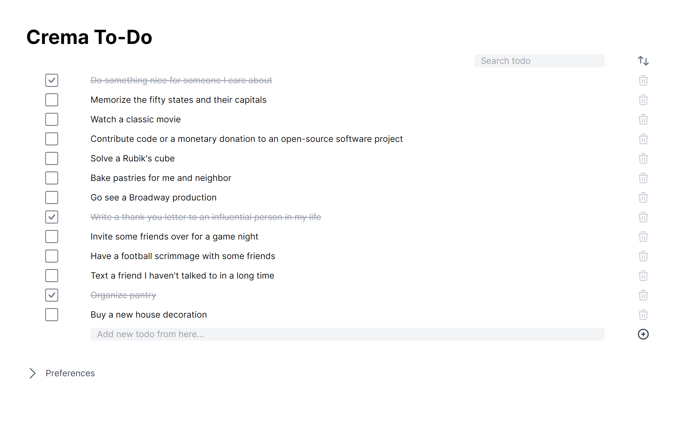

A simple to-do app built using Vue.js and tailwindcss.

Crema To-Do (Vue) is a simple to-do app built using Vue.js and tailwindcss. In this application you can add, edit or delete to-do. However, to-do filtering, searching, etc. You can perform operations and make adjustments from the preferences section.
You can sort the to-dos ascending-descending or by their names-dates,
set whether to-dos show the date or time information under which the
to-do was added, and when you accidentally delete a to-do (only the
last to-do you deleted and within 7 seconds) you can undo.
Important: This repo is a version of the same project written in Vue.
For the same project written in React, check out the
Crema To-Do (React) page.
Vue.js and tailwindcss.
To be honest, there is no story behind it. I just wanted to try Vue.js and tailwindcss.
Although it is not certain, I can rewrite this application to use the database instead of the browser local storage. I have no idea whether I can write in Vue or React.